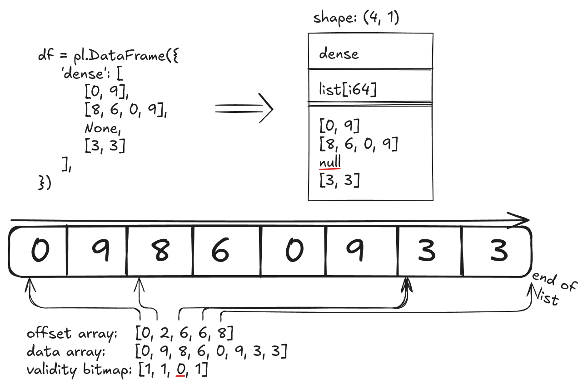

9.1 Lists in, lists out, lists all about¶
Chapter 9.0 (Weighted-mean watchers) was fun. Let's do it all over again!
Or rather, let's do another list operation. We're going to start with a dataframe such as:
shape: (4, 1)
┌──────────────┐
│ dense │
│ --- │
│ list[i64] │
╞══════════════╡
│ [0, 9] │
│ [8, 6, 0, 9] │
│ null │
│ [3, 3] │
└──────────────┘
Before we start, however, let's take a look into how Polars stores lists in memory. As we saw, lists are backed up by chunks. Inside each chunk, Polars stores all the lists ("rows") as one single list, while keeping track of where each row starts, and how many elements they have. This is consistent with Apache Arrow's columnar format. It looks something like this:

Back to where we were - we're going to try to count the indices which are non-zero. →
Note
You don't really need a plugin to do this, you can just do
But eval won't cover every need you ever have ever, so...it's good
to learn how to do this as a plugin so you can then customize it according to your needs.
Polars has a helper function built-in for dealing with this: apply_amortized. We can use it to apply
a function to each element of a List Series. In this case, we just want to find the indices of non-zero
elements, so we'll do:
fn list_idx_dtype(input_fields: &[Field]) -> PolarsResult<Field> {
let field = Field::new(input_fields[0].name.clone(), DataType::List(Box::new(IDX_DTYPE)));
Ok(field.clone())
}
#[polars_expr(output_type_func=list_idx_dtype)]
fn non_zero_indices(inputs: &[Series]) -> PolarsResult<Series> {
let ca = inputs[0].list()?;
polars_ensure!(
ca.dtype() == &DataType::List(Box::new(DataType::Int64)),
ComputeError: "Expected `List(Int64)`, got: {}", ca.dtype()
);
let out: ListChunked = ca.apply_amortized(|s| {
let s: &Series = s.as_ref();
let ca: &Int64Chunked = s.i64().unwrap();
let out: IdxCa = ca
.iter()
.enumerate()
.filter(|(_idx, opt_val)| opt_val != &Some(0))
.map(|(idx, _opt_val)| Some(idx as IdxSize))
.collect_ca(PlSmallStr::EMPTY);
out.into_series()
});
Ok(out.into_series())
}
apply_amortized is a bit like the apply_into_string_amortized function we used in How to STRING something together,
in that it makes a big allocation upfront to amortize the allocation costs. Think of it as a list version
of apply_values, where each element is itself a Series.
Something new in this example is:
IdxSizeIdxCaIDX_DTYPE
IdxSize is either u32 or u64, depending on your platform, and are what Polars generally uses
for counting-related operations. IdxCa is the associated ChunkedArray, and IDX_DTYPE the associated
Polars dtype.
To finish this off, the Python side will be a bog-standard:
def non_zero_indices(expr: IntoExprColumn) -> pl.Expr:
return register_plugin_function(
args=[expr], plugin_path=LIB, function_name="non_zero_indices", is_elementwise=True
)
If we then make run.py with
import polars as pl
import minimal_plugin as mp
pl.Config().set_fmt_table_cell_list_len(10)
df = pl.DataFrame({'dense': [[0, 9], [8, 6, 0, 9], None, [3, 3]]})
print(df)
print(df.with_columns(indices=mp.non_zero_indices('dense')))
maturin develop (or maturin develop --release if you're benchmarking!)
then we'll see
shape: (4, 2)
┌──────────────┬───────────┐
│ dense ┆ indices │
│ --- ┆ --- │
│ list[i64] ┆ list[u32] │
╞══════════════╪═══════════╡
│ [0, 9] ┆ [1] │
│ [8, 6, 0, 9] ┆ [0, 1, 3] │
│ null ┆ null │
│ [3, 3] ┆ [0, 1] │
└──────────────┴───────────┘
Yay, it worked! And not only that, but it's about 1.5x as fast as the list.eval solution
noted above!